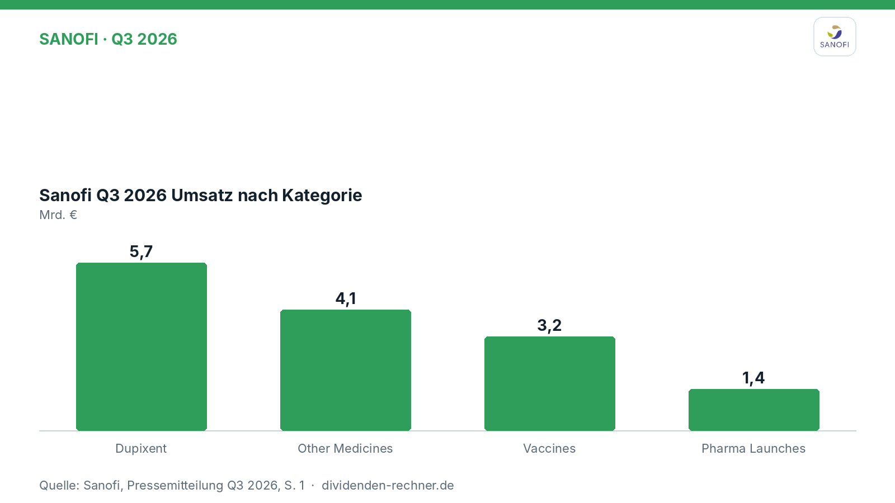
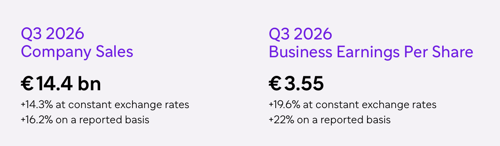
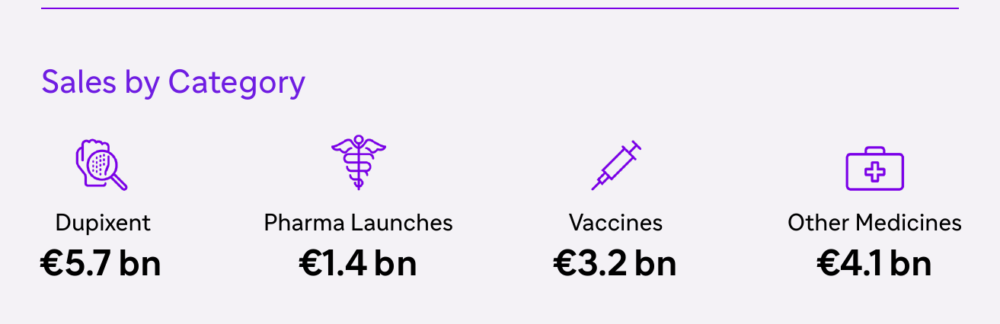
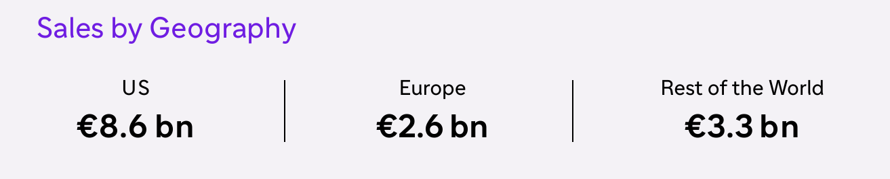

Quartalszahlen
Sanofi wächst im dritten Quartal kräftig und hebt Jahresprognose an
$SAN
Sanofi legt die Geschäftszahlen für das dritte Quartal 2026 vor. Der Umsatz steigt zweistellig, getrieben vor allem durch Dupixent und neue Medikamente.

Kurz gesagt
Umsatz: 14,4 Mrd. € (+14,3 %)
Gewinn: 4,3 Mrd. € (+17,6 %)
- Treiber: Der Dupixent-Umsatz klettert auf 5,7 Mrd. € (+34,8 %), während neue Pharma-Launches 1,4 Mrd. € einbringen.
- Ausblick: Das Management hebt die Prognose für das Gesamtjahr 2026 an und rechnet mit einem währungsbereinigten Umsatzwachstum im niedrigen Zehnerbereich.
- Belastung: Das Impfstoffgeschäft verzeichnet einen Rückgang auf 3,2 Mrd. € (−6,6 %), bedingt durch veränderte Phasen bei der respiratorischen Prävention.
Sanofi steigert Umsatz im dritten Quartal 2026 deutlich und hebt die Jahresprognose an
Sanofi hat im dritten Quartal 2026 starke Zuwächse bei Umsatz und Gewinn verbucht. Neben der Präsentation legten die Franzosen weitere Details zum Geschäftsverlauf vor. Das Unternehmen profitierte im Berichtszeitraum vor allem von einer hohen Nachfrage nach Biologika und neuen Medikamenten, die den leichten Dämpfer im Impfstoffbereich mehr als ausglichen. Belén Garijo, Chief Executive Officer, erklärte dazu:

Eigene Darstellung nach Daten aus: Sanofi, Quartalszahlen Q3 2026 vom 2026-10-30 · Original · Unterlage 2 · Unterlage 3.„Sanofi achieved another strong quarter with both robust commercial and financial performance. We have also made progress towards defining our roadmap for the future.“
— Belén Garijo, Chief Executive Officer (aus dem Englischen übersetzt)

Q3 2026 Kennzahlen im Überblick. Quelle: Sanofi, Quartalszahlen Q3 2026 vom 2026-10-30, S. 1 · Original · Unterlage 2 · Unterlage 3. Ausschnitt nur zugeschnitten, sonst unverändert.Starkes Wachstum bei Dupixent und neuen Pharma-Produkten
Im dritten Quartal 2026 erreichte der Konzernumsatz 14,4 Mrd. €, was auf Basis konstanter Wechselkurse einem Zuwachs von 14,3 % entspricht (plus 16,2 % auf berichteter Basis). Getragen wurde diese Entwicklung in erster Linie von dem Blockbuster-Medikament Dupixent, dessen Erlöse um 34,8 % auf 5,7 Mrd. € zulegten. Der Bereich Pharma Launches steuerte 1,4 Mrd. € bei und wuchs um 31,4 %, angeführt von Präparaten wie ALTUVIIIO, Ayvakit und Rezurock.

Umsatz nach Kategorie. Quelle: Sanofi, Quartalszahlen Q3 2026 vom 2026-10-30, S. 1 · Original · Unterlage 2 · Unterlage 3. Ausschnitt nur zugeschnitten, sonst unverändert.Demgegenüber stand ein Rückgang im Impfstoffgeschäft, das um 6,6 % auf 3,2 Mrd. € schrumpfte. Grund dafür war eine erwartete Verschiebung bei der Nachfrage im Bereich der respiratorischen Prävention. Die sonstigen Medikamente (Other Medicines) erreichten Erlöse von 4,1 Mrd. €, was einem leichten Plus von 5,9 % entspricht.
Regionale Verteilung und Ergebnisentwicklung
Regional bleibt der US-Markt mit 8,6 Mrd. € Umsatz das mit Abstand wichtigste Standbein für den Pharmakonzern. In Europa erwirtschaftete Sanofi 2,6 Mrd. €, während der Bereich Rest der Welt 3,3 Mrd. € beisteuerte.

Umsatz nach Regionen. Quelle: Sanofi, Quartalszahlen Q3 2026 vom 2026-10-30, S. 2 · Original · Unterlage 2 · Unterlage 3. Ausschnitt nur zugeschnitten, sonst unverändert.Auf der Ergebnisseite stieg der Business Net Income (bereinigter Nettogewinn) um 17,6 % auf Basis konstanter Wechselkurse auf 4,3 Mrd. € (plus 20,0 % auf berichteter Basis). Der Business Earnings Per Share (bereinigter Gewinn je Aktie) verbesserte sich auf 3,55 €, ein Plus von 19,6 % auf währungsbereinigter Basis. Das IFRS-Nettoergebnis belief sich auf 3,0 Mrd. €, während das IFRS-Ergebnis je Aktie bei 2,52 € lag.
Einordnung in die aktuelle Unternehmensstrategie
Die vorgelegten Zahlen und die angehobene Prognose für das Gesamtjahr 2026 – nun wird ein währungsbereinigtes Umsatzwachstum im niedrigen Zehnerbereich erwartet – unterstreichen die operative Dynamik des Pharmakonzerns. Sanofi treibt gleichzeitig den Umbau des Portfolios voran. Dazu gehört die Ausweitung der Partnerschaft mit Regeneron im Bereich der Immunologie sowie die geplante Ausgliederung reiferer Medikamente an Partner wie Cheplapharm, um sich stärker auf Kernbereiche wie Immunologie, seltene Erkrankungen und Impfstoffe zu konzentrieren. Dennoch steht das Unternehmen vor der langfristigen Herausforderung, das anstehende Auslaufen von Patenten wichtiger Produkte wie Dupixent im kommenden Jahrzehnt durch Neuzulassungen und den Ausbau der Pipeline zu kompensieren.
Quelle: Sanofi, Quartalszahlen Q3 2026 vom 2026-10-30. Rechenwege eigene Berechnung. Keine Anlageberatung.
Hinweis: Dieser Text dient der allgemeinen Information und ist weder Anlage-, Steuer- noch Rechtsberatung. Kapitalanlagen sind mit Risiken verbunden, bis hin zum Totalverlust.